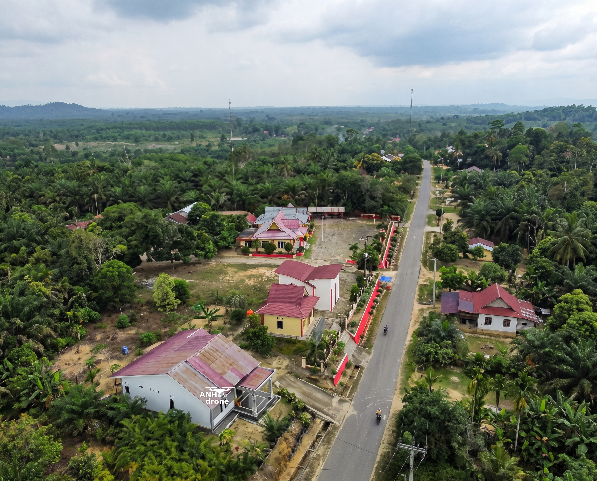
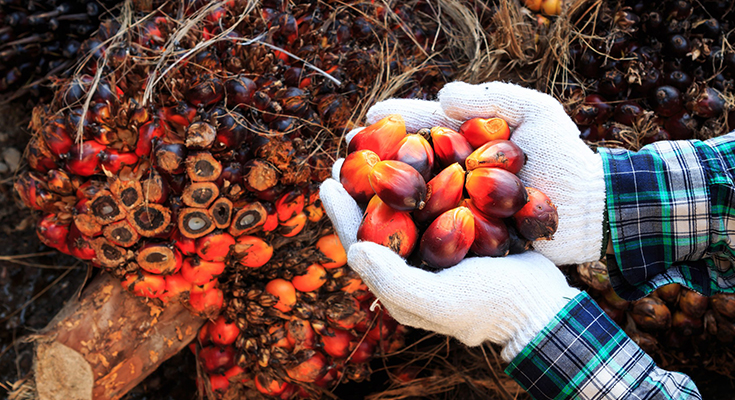
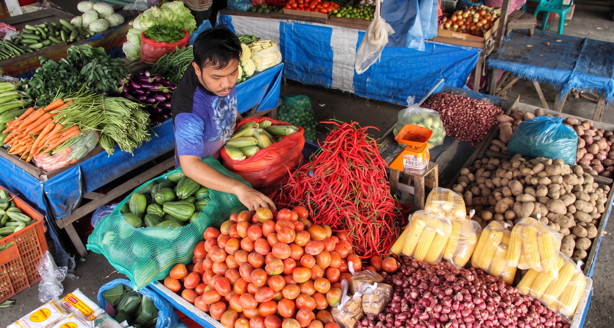

Potensi Ukui

Penghasilan Warga
Ukui adalah satu-satunya Kelurahan di Kecamatan Ukui sekaligus sebagai Ibukota Kecamatan. Walaupun sebagai status ibukota kecamatan, namun Ukui masih jauh dalam hal pembangunan, apalagi dikaitkan dengan ibukota. Ukui yang dulunya sebagai desa, dikategorikan sebagai desa tertinggal sesuai dengan Surat Menteri PDT (Percepatan daerah tertinggal) tahun 2008. untuk itu berbagai cara untuk meningkatkan pelayanan serta infrastrukutur yang menunjang ekonomi dan fasilitas pelayanan publik terus dilakukan oleh Pemerintah Kelurahan.

Buah Sawit
Kondisi geografis Kelurahan Ukui yang berupa dataran rendah dipadukan dengan iklim tropis menjadikannya lahan yang sangat subur dan ideal untuk komoditas perkebunan, khususnya kelapa sawit. Sektor ini telah menjadi primadona dan mata pencaharian utama bagi sebagian besar masyarakat kami.
Potensi kelapa sawit di Ukui tidak hanya sebatas hasil panen (Tandan Buah Segar), tetapi juga menciptakan efek berganda (multiplier effect) bagi ekonomi warga. Mulai dari terserapnya tenaga kerja lokal, berkembangnya jasa angkutan hasil bumi, hingga berdirinya usaha-usaha penyedia pupuk dan alat pertanian. Kelapa sawit secara konsisten terus menjadi fondasi kuat yang menopang dan meningkatkan taraf hidup masyarakat Kelurahan Ukui.
Bukit Kembang Arum

Sebagai satu-satunya kelurahan sekaligus Ibukota Kecamatan, Ukui memiliki keunggulan komparatif dalam hal aksesibilitas. Terbukanya isolasi daerah dan kemudahan akses menuju desa-desa sekitar, serta posisinya yang strategis di dekat Jalur Lintas Timur, menjadikan Ukui tumbuh secara alami sebagai pusat aktivitas perniagaan dan perekonomian.
Sektor perdagangan di Ukui sangat hidup dan beragam. Pasar-pasar dan kawasan pertokoan di Kelurahan Ukui menjadi titik temu (pusat interaksi) bagi warga dari berbagai desa di sekitarnya untuk memenuhi kebutuhan pokok, alat-alat perkebunan, hingga transaksi hasil bumi. Perputaran uang yang cepat dari hasil panen sawit secara langsung mendorong tingginya daya beli masyarakat, yang pada akhirnya membuat sektor perdagangan ritel, jasa, dan kuliner di Ukui tumbuh subur.